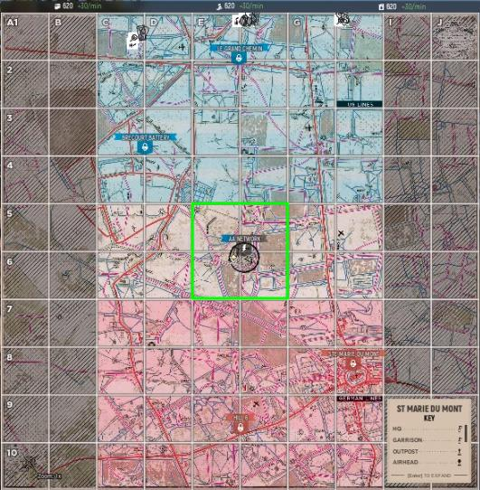
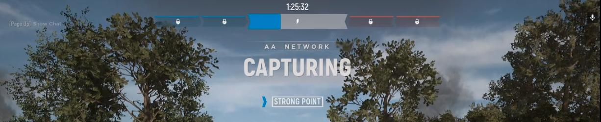

Hay dos operaciones de combate principales en HLL: Modos de guerra y ofensivo.
MODO DE GUERRA (WARFARE)
Un partido estilo tira y afloja donde cada equipo lucha por el control territorial. No hay boletos, solo territorio y un cronómetro. Ganas capturando todo el territorio enemigo o manteniendo la mayoría de los sectores al final del tiempo (1 hora y 30 minutos).
El territorio es el objetivo principal, por lo que es importante conocer el área de operación. Cada mapa se divide en un sistema de cuadrícula de 10x6 o 6x10 (dependiendo de la orientación del mapa). Un cuadrado de cuadrícula es de 200 mx 200 m y el mapa está agrupado en 5 sectores.

Al inicio de la partida, solo habrá un sector activo (puede ser capturado o recapturado) que será territorio Neutral. Una vez que el territorio neutral ha sido capturado, se volverá Amigo o Enemigo dependiendo del equipo que lo haya capturado.
A partir de ese momento, habrá 2 sectores activos en juego: los sectores Amigo y Enemigo adyacentes entre sí. Los otros puntos fuertes se bloquearán hasta que se capture el territorio adyacente, poniéndolos en juego.
Zona de límite: estar en cualquier lugar del punto fuerte (indicado por un círculo de rayas negras) y los 4 cuadrados de la cuadrícula alrededor del punto fuerte contribuirán a capturar o defender un punto.
Cada jugador dentro del punto fuerte proporciona tres veces la fuerza máxima.
El posicionamiento es clave y es importante comprender dónde debes estar. Usa tu Mapa (tecla M) para orientarte primero a los “Sectores Activos” (neutro, amigo o enemigo) y luego a los “Puntos Fuertes” en juego.
Presiona la tecla T para saber si estás contribuyendo activamente a capturar o a defender un punto. El progreso del límite actual se muestra en la parte superior de la pantalla:
- Capturando: más aliados que enemigos.
- Perdiendo: más enemigos que aliados.
- Disputa: igual número de aliados y enemigos.

Es importante equilibrar las fuerzas entre ataque y defensa en este modo de juego tipo tira y afloja. Demasiado a la ofensiva y eres vulnerable. Demasiado en defensa y es probable que te sientas abrumado.
MODO OFENSIVO (OFFENSIVE)
En este modo de juego, un bando ataca y el otro defiende. Los defensores ganan aguantando la duración del cronómetro (30 minutos por sector) y los atacantes ganan al capturar los 5 sectores. El modo de juego ofensivo se juega en los mismos mapas que la guerra, excepto en Omaha Beach (solo modo ofensivo).
Cambios respecto del modo de guerra:
- Sectores: La ubicación del punto fuerte solo será visible para el sector activo. Debes capturar un sector para ver el siguiente punto fuerte.
- Captura: solo los soldados dentro del punto fuerte cuentan para la fuerza de captura.
- Tiempo extra: La ofensiva tiene el potencial de tiempo extra. Si estás capturando activamente un sector cuando se acaba el tiempo y tienes recursos de mano de obra disponibles, el juego entrará en tiempo extra hasta que se alcance el límite o se agote la mano de obra.
- Atacar o defender, no ambos: si pierdes un sector como defensor, no puedes recuperar ese territorio. Si capturas un territorio como atacante, no necesitas defender ese territorio.
- Puntos de generación: como defensores, tendrás 3 guarniciones predeterminadas en tu cuarto sector. Estos funcionan de manera similar a las Guarniciones de HQ que tienen una reaparición de 10 segundos. También deben destruirse a mano y puedes construir otra guarnición al lado.
- Recursos: como atacantes, comenzará con 500 de cada tipo de recurso. Deberás crear nodos de recursos para generar recursos adicionales. Como defensores, comenzarás con 250 recursos.
- Artillería: solo disponible para los defensores.
Si bien las diferencias entre los modos de juego son sutiles, la experiencia de juego es increíblemente diferente y agradable.